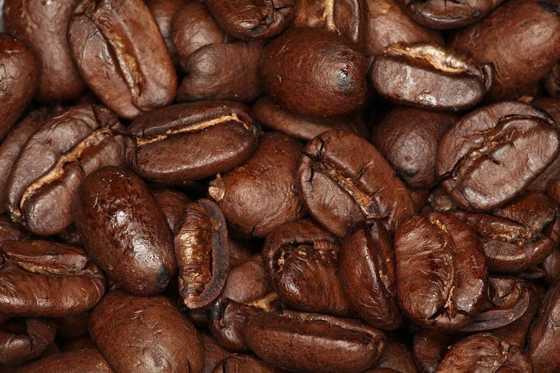
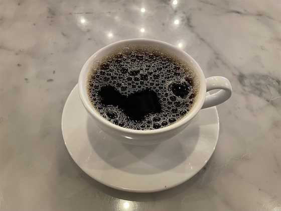
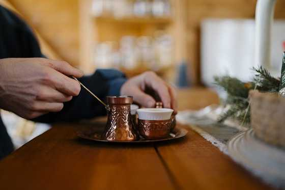
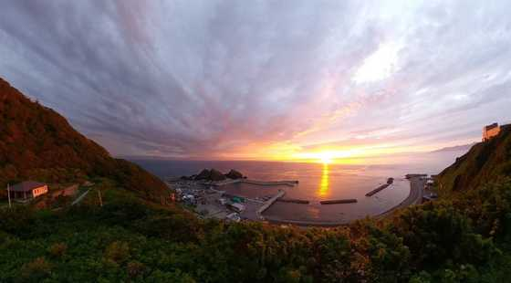
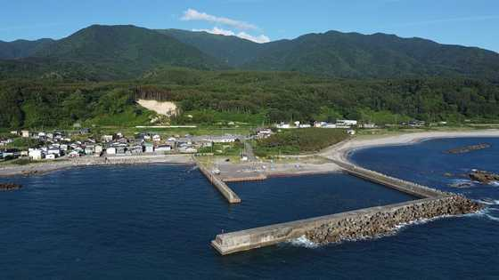
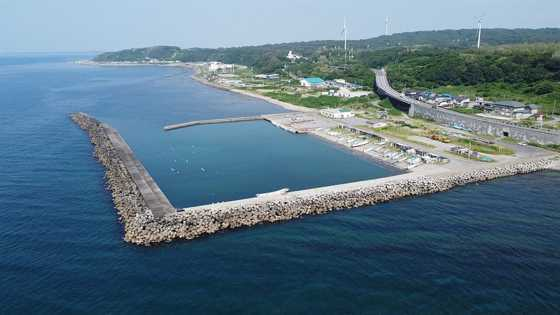

青森県むつ市・田名部川のほとり
COFFEE STAND
No.52Good coffee, Good smile.
川のほとりの小さなスタンドで、おいしい一杯と、ほっとする笑顔を。
お店の想い
おいしいコーヒーと、笑顔のために。
COFFEE STAND No.52は、青森県むつ市の田名部川のほとりにある、小さなコーヒースタンドです。お店のInstagramには「Good coffee, Good smile」という言葉が添えられています。
立ち寄って一杯を受け取るだけの小さな場所だからこそ、コーヒーの味と、そこで生まれる笑顔を大切にしたい。そんな想いをこの言葉から読み取って、このページの色や言葉を決めました(制作側のイメージです)。
情報源: 店舗Instagram @coffeestand_no.52(田名部川のほとりの小さなコーヒースタンドであること、「Good coffee, Good smile」の言葉、2026年8月1日オープン予定との案内)
店名の「No.52」の意味は確認できていないため、触れていません。上記以外の文章は制作側の表現です。

メニュー
一杯ずつ、ていねいに。
メニューの詳細は確認できていないため「準備中」としています。写真はコーヒーのイメージで、お店の提供内容そのものではありません。






水辺のイメージ
小さなスタンドに、川のほとりの空気を。
田名部川のほとりという場所から、静かな水辺の風景を集めました。いずれも青森県内または国外のフリー素材で、むつ市の写真ではありません。





口コミ
こんな声が届くお店に(イメージ例)
散歩の途中に寄れる気軽さがうれしい。受け取った一杯で、ほっとしました。
川沿いのベンチで飲むコーヒーは格別そう。スタッフの笑顔も楽しみです。
「Good coffee, Good smile」の言葉どおり、気持ちのいい時間になりました。
上の3件は制作側が作成したイメージ例で、実在のお客様の声ではありません。